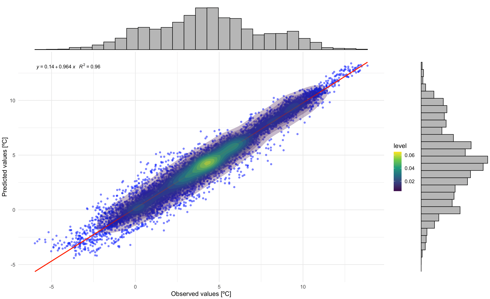

Evaluating LCZ-based Interpolation in Berlin
Max Anjos
February 13, 2025
Source:vignettes/local_func_modeling_eval.Rmd
local_func_modeling_eval.RmdIntroduction
Quantifying interpolated air temperature is crucial for climate
research, especially when the results are used for various applications.
The LCZ4r package provides the lcz_interp_eval() function
to assess LCZ-based interpolation. In this tutorial, we’ll demonstrate
how to use this function to evaluate air temperature interpolation
across Berlin, Germany. We’ll calculate and visualize evaluation
metrics.
Dataset
# Get the LCZ map for Berlin using the LCZ Generator Platform
lcz_map <- lcz_get_map_generator(ID = "8576bde60bfe774e335190f2e8fdd125dd9f4299")
# Optional: Clip the LCZ map to the Berlin area
lcz_map <- lcz_get_map2(lcz_map, city = "Berlin")
# Visualize the LCZ map
lcz_plot_map(lcz_map)
Demo: interpolate map for a specific hour of day
Copy
# Map air temperatures for June 2, 2020, at 15:00
my_interp_map <- lcz_interp_map(
lcz_map,
data_frame = lcz_data,
var = "airT",
station_id = "station",
sp.res = 100,
tp.res = "hour",
year = 2020,
month = 7,
day = 6,
hour = 13
)
# Customize the plot with titles and labels
lcz_plot_interp(
my_interp_map,
title = "Thermal Field",
subtitle = "Berlin - July 6, 2020 at 13:00",
caption = "Source: LCZ4r, 2024.",
fill = "[ºC]"
)Wow! That’s great. We can see a well-defined urban heat island in central areas.

Evaluate a spatial and temporal interpolation
The key question is: How confident is the interpolated map? To address this, we use the lcz_interp_eval() function to quantify the related error, which is crucial for understanding how well the LCZ-based interpolation predicts air temperatures.
key fatures of lcz_interp_eval()
This function evaluates the variability of spatial and temporal interpolation of a variable (e.g., air temperature) using LCZ as a background. It supports both LCZ-based and conventional interpolation methods. The function allows for flexible time period selection, cross-validation, and station splitting for training and testing.
In this demo, we select hourly air temperature data for January 2020 at a 500-meter spatial resolution, using:
- extract.method: simple (assigns the LCZ class based on the value of the raster cell in which the point falls).
- LOOCV: TRUE (leave-one-out cross-validation for evaluation).
- vg.model: Sph (spherical variogram model for kriging) *LCZinterp: TRUE (activates interpolation with LCZ).
Note: This process may take a while, but don’t worry—grab a cup of coffee!
# Evaluate the interpolation
df_eval <- lcz_interp_eval(
lcz_map,
data_frame = lcz_data,
var = "airT",
station_id = "station",
year = 2020,
month = 1,
LOOCV = TRUE,
extract.method = "simple",
sp.res = 500,
tp.res = "hour",
vg.model = "Sph",
LCZinterp = TRUE
)Check output out
Let’s examine the structure of the output data frame. The function returns a data frame with date, station, lcz, observed values, predicted values, and residuals (the difference between observed and predicted values). If isave = TRUE, a shapefile with additional information will also be saved to your computer.
str(df_eval)Analyse the outcomes with metrics
Based on the table results, we calculate evaluation metrics to quantify uncertainties. Key metrics include: root mean square error (RMSE), mean absolute error (MAE), and symmetric mean absolute percent error (sMAPE), chosen to address MAPE’s sensitivity to near-zero values.
Note that, we aggregated the metric values by LCZ class
#Calculate metrics
df_eval_metrics <- df_eval %>%
group_by(lcz) %>%
summarise(
rmse = sqrt(mean((observed - predicted)^2)), # RMSE
mae = mean(abs(observed - predicted)), # MAE
smape = mean(2 * abs(observed - predicted) / (abs(observed) + abs(predicted)) * 100) # sMAPE
)
df_eval_metrics
Correlation between observed and prediced values
#Load addtional packages
library(ggExtra) # For marginal histograms
#library(ggpmisc) # For regression equation and R2
# Correlation plot with regression equation and R2
p1 <- ggplot(df_eval, aes(x = observed, y = predicted)) +
geom_point(alpha = 0.5, color = "blue") + # Scatter points
geom_smooth(method = "lm", color = "red", se = FALSE) + # Regression line
stat_density2d(aes(fill = ..level..), geom = "polygon", alpha = 0.3) + # Density contours
scale_fill_viridis_c() + # Viridis color scale for density
# stat_poly_eq(
# aes(label = paste(..eq.label.., ..rr.label.., sep = "~~~")),
# formula = y ~ x,
# parse = TRUE,
# label.x.npc = "left", # Position of the equation
# label.y.npc = "top"
# ) + # Add regression equation and R2
labs(
title = "",
x = "Observed values",
y = "Predicted values"
) +
theme_minimal(base_size = 14) # Minimal theme for elegance
# Add marginal histograms
p1_with_marginals <- ggExtra::ggMarginal(p1, type = "histogram", fill = "gray", bins = 30)
# Print the plot
p1_with_marginals
Residuals
In this plot, you can see the residuals by LCZ. The plot displays residuals vs. observed values for each LCZ in separate facets. It includes a scatterplot, a horizontal reference line (red), a loess smoothing line (blue), and density contours.
# Residuals plot by LCZ
p2 <- ggplot(df_eval, aes(x = observed, y = residual)) +
# Scatter points with transparency for better visibility
geom_point(alpha = 0.4, color = "darkgreen", size = 1) +
# Horizontal reference line at 0
geom_hline(yintercept = 0, linetype = "dashed", color = "red", size = 0.8) +
# Loess smoothing line for trend
geom_smooth(method = "loess", color = "blue", se = FALSE, size = 1) +
#Density contours for point concentration
stat_density2d(aes(fill = ..level..), geom = "polygon", alpha = 0.4) +
scale_fill_viridis_c(option = "D", direction = -1) + # Viridis color scale
# Facet by LCZ with free scales
facet_wrap(~ lcz, scales = "free", ncol = 3) +
# Labels and titles
labs(
title = "",
x = "Observed values",
y = "Residuals",
fill = "Density"
) +
# Customize
theme_minimal(base_size = 14) +
theme(
plot.title = element_text(size = 16, face = "bold", hjust = 0.5), # Centered bold title
axis.title = element_text(size = 14, face = "bold"), # Bold axis titles
axis.text = element_text(size = 12), # Axis text size
strip.text = element_text(size = 12, face = "bold"), # Facet labels
legend.position = "right", # Place legend on the right
legend.title = element_text(size = 12, face = "bold"), # Bold legend title
legend.text = element_text(size = 10), # Legend text size
panel.grid.major = element_line(color = "gray90", linetype = "dotted"), # Subtle gridlines
panel.grid.minor = element_blank()
)
# Print the plot
p2